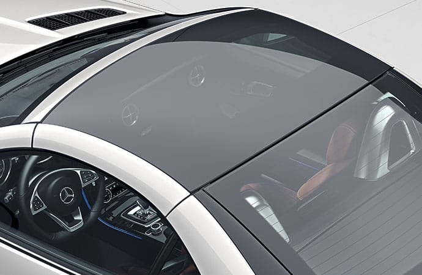

Deluxe motor sports.
Welcome to deluxe motor sports website where you can find your favorite cars to buy.
We have various types of car that you can browse from several companies like Mercedes, Nissan and Ford.
First in our category we will show you our first car in stock.
The Mercedes SLC roadster.

From its diamond-textured grille to its "twin torch" LED taillamps and mirror logo projectors, the SLC wraps its long-hood/short-deck balance in brilliance. Designed to slice through the wind and through corners, its sleek muscle and wide stance reveal its pure sports-car soul. And its power hardtop is among the industry's most elegant.

In under 20 seconds, the SLC's signature power retractable hardtop folds into the trunk, delivering open-air euphoria while leaving ample luggage space. An electric trunk divider makes top-lowering even easier. Choose a standard Panorama roof with a tinted see-through panel, or the electrically variable tint of exclusive MAGIC SKY CONTROL®.

Craftsmanship meets connectivity in the SLC cockpit. Advanced technology is available in abundance, from music streaming to navigation with online searching. Clear analog gauges team with vivid color displays. Even the electronic gear selector wraps high-tech operation in a sculpture of aluminum and leather.



A Mercedes-Benz innovation, available MAGIC SKY CONTROL® turns the standard Panorama roof transparent by electrically aligning tiny particles within its special glass overhead panel. Switch off the power and it darkens, to help keep out harsh sunlight and its thermal energy. It effectively blocks UV and infrared rays in either mode, helping keep the cabin cooler.
| Car model | Stock | Price | Available colors | Rent price | Car warranty availability | |||||
|---|---|---|---|---|---|---|---|---|---|---|
| Mercedes SLC roadster | 500,000 | $49,950 | black | red | blue | yellow | white | green | $21/day | yes |
The Mercedes SLC roadster key features.
- 2.0L inline-4 turbo
- 241 hp @ 5,550 rpm
- 9G-TRONIC 9-speed. Automatic transmission.
- 6.5 cu ft. Cargo capacity.
- 5.8 sec 0-60 mph
For more information please visit
Nissan GT-R Nismo 2021

Key Features of the Nissan GT-R
- 3.8-liter DOHC 24-valve twin-turbocharged V6
- ATTESA E-TS® All-Wheel Drive (AWD) with patented independent rear-mounted transaxle
- Nissan/Brembo® braking system
- NISMO®-tuned 3.8-liter DOHC 24-valve twin-turbocharged V6
- Nissan/Brembo® carbon ceramic braking system
- NISMO-tuned suspension
- NISMO aerodynamic body design
- NISMO Black/Red interior treatment
Available semi-aniline leather interior appointments, along with double stitching on the seats, are a tactile and visual feast.
The Nissan GT-R NISMO’s suspension setup is tuned for stunning agility and handling finesse, without compromising refinement. The springs and custom-developed Bilstein® DampTronic® dampers in the front and rear suspension are specially tuned to deliver exceptional grip levels and progressive handling response at the limit.
Designed exclusively for the GT-R, the 11-speaker Bose Premium Audio System features dual woofers between the rear seats, employing the trunk as a giant bass enclosure.
Active noise cancellation, uses microphones in the cabin to actively monitor the sound and help remove undesirable noise.
.jpg)
| Car model | Stock | Price | Available colors | Rent price | Car warranty availability | |||||
|---|---|---|---|---|---|---|---|---|---|---|
| Nissan GT-R Nismo 2021 | 200,000 | $210,740 | black | red | blue | yellow | white | green | $50/day | yes |
For more information please visit
Ford Mustang GT 2021

The Ford Mustang GT key features.
- 6 speed manual transmission
- Rear wheel drive
- 15.5 gal Fuel tank capacity
- 310 hp @ 5500 rpm
- 350 lb-ft @ 3000 rpm
- 6 total speakers
- 4 inline cylinders
- 325.5/465.0 mi. Range in a highway in miles
| Car model | Stock | Price | Available colors | Rent price | Car warranty availability | |||||
|---|---|---|---|---|---|---|---|---|---|---|
| Ford Mustang GT 2021 | 100,000 | $28,350 | black | red | blue | yellow | white | green | $15/day | yes |
For more information please visit
For more Enquiries you can call this number: +201093190262